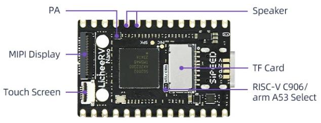

English
EnglishMaixCAM MaixPy Playback Audio
Update history
| Date | Version | Author | Update content |
|---|---|---|---|
| 2024-05-20 | 1.0.0 | lxowalle | Initial document |
Introduction
This document provides instructions on how to play audio
How to use
Hardware Support
| Device | Microphone | Speaker |
|---|---|---|
| MaixCAM | ✅ | ❌ |
| MaixCAM2 | ✅ | ✅ |
| MaixCAM Pro | ✅ | ✅ |
Hardware operation

The MaixCAM does not have a built-in speaker, so you will need to solder a 1W speaker yourself. The pins for soldering the speaker are shown in the diagram above on the VOP and VON pins corresponding to the Speaker.
Note: If the MaixCAM has copper posts attached to these pins, they can be soldered directly to the posts, or on the other side of the board for aesthetic reasons.
Code
Playing a WAV file
from maix import audio, time, app
p = audio.Player("/root/output.wav")
p.volume(80)
p.play()
while not app.need_exit():
time.sleep_ms(10)
print("play finish!")
Steps：
Import the audio, time and app modules:
from maix import audio, time, appInitialize the player:
p = audio.Player("/root/output.wav")
- Note that the default sample rate is 48k, the sample format is little-endian format - signed 16-bit, and the sample channel is 1. You can also customise the parameters like this
p = audio.Player(sample_rate=48000, format=audio.Format.FMT_S16_LE, channel = 1). So far only tested with sample rate 48000, formatFMT_S16_LE, and number of sampling channels 1. - If it is a
.wavfile, the sample rate, sample format and sample channel are automatically obtained. p.volume(80)set volume value to 80, range is [0~100].
Playing audio
p.play()
- This operation will block until all audio data is written, but not until all audio data is actually played. If you exit the programme after calling
play(), some of the audio data to be played may be lost.
- Done
Playback with PCM data
from maix import audio, time, app
p = audio.Player()
with open('/root/output.pcm', 'rb') as f:
ctx = f.read()
p.play(bytes(ctx))
while not app.need_exit():
time.sleep_ms(10)
print("play finish!")
Steps：
Import the audio, time and app modules:
from maix import audio, time, appInitialize the player:
p = audio.Player()
- Note that the default sample rate is 48k, the sample format is little-endian format - signed 16-bit, and the sample channel is 1. You can also customise the parameters like this
p = audio.Player(sample_rate=48000, format=audio.Format.FMT_S16_LE, channel = 1). So far only tested with sample rate 48000, formatFMT_S16_LE, and number of sampling channels 1.
Open and playback a PCM file
with open('/root/output.pcm', 'rb') as f: ctx = f.read() p.play(bytes(ctx)) while not app.need_exit(): time.sleep_ms(10)
with open(‘xxx’,‘rb’) as f:open filexxxand get file objectfctx = f.read()reads the contents of the file intoctxp.play(bytes(ctx))plays the audio,pis the opened player object,ctxis thePCMdata converted to type bytestime.sleep_ms(10)Here there is a loop to wait for the playback to complete, as the playback operation is performed asynchronously, and if the program exits early, then it may result in the audio not being played completely.
- Done
Non-blocking Playback
In scenarios like voice assistants or real-time communication, audio playback usually cannot block the main thread. Therefore, the Player can be set to non-blocking mode, and some application-level code can be added to support playback without blocking the main thread. A reference example is shown below:
from maix import audio, app, time
import threading
from queue import Queue, Empty
class StreamPlayer:
def __init__(self, sample_rate=16000, channel=1, block:bool=False):
self.p = audio.Player(sample_rate=sample_rate, channel=channel, block=block)
self.p.volume(50)
zero_data = bytes([0] * 4096)
self.p.play(zero_data)
self.queue = Queue(maxsize=250)
self.t = threading.Thread(target=self.__thread, daemon=True)
self.t.start()
def wait_idle_size(self, size:int):
while not app.need_exit():
idle_frames = self.p.get_remaining_frames()
write_frames = size / self.p.frame_size()
if idle_frames >= write_frames:
break
time.sleep_ms(10)
def __thread(self):
while not app.need_exit():
try:
pcm = self.queue.get(timeout=500)
# wait player is idle
self.wait_idle_size(len(pcm))
self.p.play(pcm)
except Empty:
continue
def write(self, pcm:bytes):
remain_len = len(pcm)
period_bytes = self.p.frame_size() * self.p.period_size()
offset = 0
while remain_len > 0:
write_bytes = period_bytes if period_bytes <= remain_len else period_bytes - remain_len
new_pcm = pcm[offset:offset+write_bytes]
self.queue.put(new_pcm)
remain_len -= write_bytes
offset += write_bytes
def wait_finish(self):
total_frames = self.p.period_count() * self.p.period_size()
while not app.need_exit():
idle_frames = self.p.get_remaining_frames()
if idle_frames == total_frames:
break
time.sleep_ms(10)
if __name__ == '__main__':
stream_player = StreamPlayer()
with open('/maixapp/share/audio/demo.wav', 'rb') as f:
pcm = f.read()
t = time.ticks_ms()
stream_player.write(pcm)
print(f'write pcm data cost {time.ticks_ms() - t} ms')
t = time.ticks_ms()
stream_player.wait_finish()
print(f'write play finish cost {time.ticks_ms() - t} ms')
In this example, the Player object is set to non-blocking mode via the block parameter. Therefore, calling the play() method does not block the main thread.
Due to internal buffer size limitations, if the amount of data to play within a certain period exceeds the buffer capacity, play may still block. To handle this, you can use the get_remaining_frames() method to get the available space in the buffer. Note that this method returns the size in frames, which can be converted to bytes using frame_size():
remaining_frames = p.get_remaining_frames() # unit:frame
remaining_bytes = p.frame_size(remaining_frames) # unit: bytes
You can move the playback operation to a separate thread and, before calling play(), check whether there is enough remaining space in the buffer. This ensures that the main thread will never be blocked.